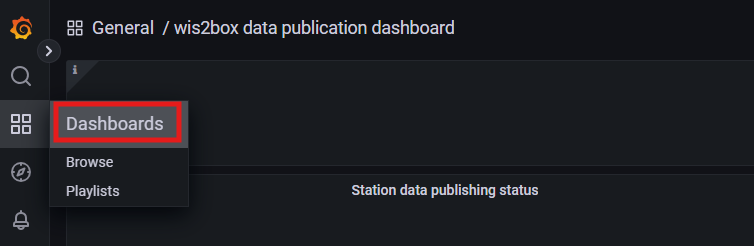
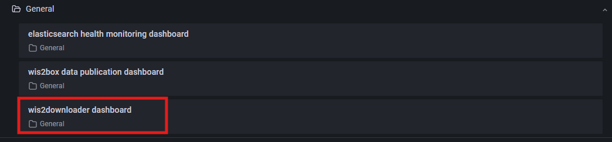
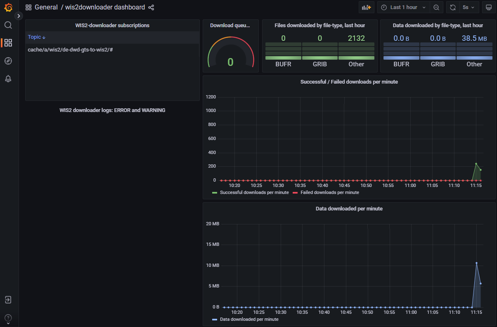

使用 wis2downloader 从 WIS2 下载数据
学习目标！
在本次实践课程结束后，您将能够：
- 使用 "wis2downloader" 订阅 WIS2 数据通知并将数据下载到本地系统
- 在 Grafana 仪表板中查看下载状态
- 学习如何配置 wis2downloader 以订阅非默认的 Broker
简介
在本课程中，您将学习如何设置对 WIS2 Broker 的订阅，并使用 wis2box 中包含的 "wis2downloader" 服务将数据自动下载到本地系统。
关于 wis2downloader
wis2downloader 也可以作为独立服务运行，可以部署在与发布 WIS2 通知的系统不同的系统上。有关将 wis2downloader 作为独立服务使用的更多信息，请参阅 wis2downloader。
如果您希望开发自己的服务来订阅 WIS2 通知并下载数据，可以参考 wis2downloader 源代码。
准备工作
开始之前，请登录到您的学生虚拟机，并确保您的 wis2box 实例已启动并运行。
wis2downloader 基础知识
wis2downloader 作为一个独立的容器包含在 wis2box 中，并在 Docker Compose 文件中定义。wis2box 中的 Prometheus 容器被配置为从 wis2downloader 容器中抓取指标，这些指标可以通过 Grafana 仪表板进行可视化。
在 Grafana 中查看 wis2downloader 仪表板
打开一个网页浏览器，导航到您的 wis2box 实例的 Grafana 仪表板，地址为 http://YOUR-HOST:3000。
点击左侧菜单中的仪表板选项：

然后选择 wis2downloader 仪表板：

您应该会看到以下仪表板：

此仪表板基于 wis2downloader 服务发布的指标，显示当前正在进行的下载状态。
在左上角，您可以看到当前活跃的订阅。
保持此仪表板打开，您将在接下来的练习中使用它来监控下载进度。
查看 wis2downloader 配置
wis2box 中的 wis2downloader 服务可以通过 wis2box.env 文件中定义的环境变量进行配置。
以下是 wis2downloader 使用的环境变量：
- DOWNLOAD_BROKER_HOST: 要连接的 MQTT Broker 的主机名。默认值为 globalbroker.meteo.fr
- DOWNLOAD_BROKER_PORT: 要连接的 MQTT Broker 的端口。默认值为 443（用于 WebSockets 的 HTTPS）
- DOWNLOAD_BROKER_USERNAME: 连接到 MQTT Broker 时使用的用户名。默认值为 everyone
- DOWNLOAD_BROKER_PASSWORD: 连接到 MQTT Broker 时使用的密码。默认值为 everyone
- DOWNLOAD_BROKER_TRANSPORT: 使用的传输机制（websockets 或 tcp）。默认值为 websockets
- DOWNLOAD_RETENTION_PERIOD_HOURS: 下载数据的保留时间（以小时为单位）。默认值为 24
- DOWNLOAD_WORKERS: 使用的下载工作线程数。默认值为 8，决定并行下载的数量。
- DOWNLOAD_MIN_FREE_SPACE_GB: 保留在存储下载数据的卷上的最小空闲空间（以 GB 为单位）。默认值为 1。
要查看当前的 wis2downloader 配置，可以使用以下命令：
cat ~/wis2box/wis2box.env | grep DOWNLOAD
查看 wis2downloader 配置
wis2downloader 默认连接的 MQTT Broker 是什么？
下载数据的默认保留时间是多少？
点击查看答案
wis2downloader 默认连接的 MQTT Broker 是 globalbroker.meteo.fr。
下载数据的默认保留时间是 24 小时。
更新 wis2downloader 配置
要更新 wis2downloader 的配置，可以编辑 wis2box.env 文件。要应用更改，可以重新运行 wis2box 堆栈的启动命令：
python3 wis2box-ctl.py start
您将看到 wis2downloader 服务以新配置重新启动。
您可以在接下来的练习中保持默认配置。
wis2downloader 命令行界面
要访问 wis2box 中 wis2downloader 的命令行界面，可以使用以下命令登录到 wis2downloader 容器：
python3 wis2box-ctl.py login wis2downloader
使用以下命令列出当前活跃的订阅：
wis2downloader list-subscriptions
此命令返回一个空列表，因为尚未设置任何订阅。
使用 WIS2 Global Broker 下载 GTS 数据
如果您保持 wis2downloader 的默认配置，它当前连接到由 Météo-France 托管的 WIS2 Global Broker。
设置订阅
使用以下命令 cache/a/wis2/de-dwd-gts-to-wis2/#，订阅由 DWD 托管的 GTS-to-WIS2 网关通过 Global Caches 发布的数据：
wis2downloader add-subscription --topic cache/a/wis2/de-dwd-gts-to-wis2/#
然后通过输入 exit 退出 wis2downloader 容器：
exit
检查下载的数据
在 Grafana 中检查 wis2downloader 仪表板，查看新添加的订阅。等待几分钟，您应该会看到开始下载的第一个数据。确认下载开始后，继续下一步练习。
wis2box 中的 wis2downloader 服务将数据下载到 wis2box.env 文件中定义的 WIS2BOX_HOST_DATADIR 目录下的 'downloads' 目录。要查看下载目录的内容，可以使用以下命令：
ls -R ~/wis2box-data/downloads
请注意，下载的数据存储在以 WIS2 通知发布的主题命名的目录中。
查看下载的数据
您在下载目录中看到了哪些目录？
您是否在这些目录中看到了任何下载的文件？
点击查看答案
您应该会看到一个以 cache/a/wis2/de-dwd-gts-to-wis2/ 开头的目录结构，在其下方可以看到更多以下载数据的 GTS 公报头命名的目录。
根据您开始订阅的时间，您可能会或可能不会在此目录中看到任何下载的文件。如果尚未看到文件，请再等待几分钟后再次检查。
在 Grafana 中检查 wis2downloader 仪表板以查看下载进度，您将在仪表板的左上角看到您添加的订阅，以及随着数据下载数量的增加而变化的下载数量：

删除订阅和下载的数据
在进入下一步练习之前，让我们清理订阅和下载的数据。
重新登录到 wis2downloader 容器：
python3 wis2box-ctl.py login wis2downloader
并使用以下命令从 wis2downloader 中删除您创建的订阅：
wis2downloader remove-subscription --topic cache/a/wis2/de-dwd-gts-to-wis2/#
访问 Grafana 仪表板以确认订阅已被删除且下载已停止，您应该会看到订阅从仪表板左上角消失。
等待几分钟，直到仪表板显示下载已停止。
最后，您可以使用以下命令删除 wis2downloader 容器中的下载数据：
rm -rf app/data/downloads/*
Note
wis2downloader 容器中的 app/data/downloads 目录映射到 wis2box.env 文件中定义的 WIS2BOX_HOST_DATADIR 下的 downloads 目录。上述命令会删除所有下载的数据。
通过输入 exit 退出 wis2downloader 容器：
exit
检查主机上的下载目录是否再次为空：
ls -R ~/wis2box-data/downloads
关于 GTS-to-WIS2 网关
目前有两个 GTS-to-WIS2 网关通过 WIS2 Global Broker 和 Global Caches 发布数据：
- DWD（德国）：centre-id=de-dwd-gts-to-wis2
- JMA（日本）：centre-id=jp-jma-gts-to-wis2
如果在前面的练习中将 de-dwd-gts-to-wis2 替换为 jp-jma-gts-to-wis2，您将收到由 JMA GTS-to-WIS2 网关发布的通知和数据。
origin 与 cache 主题的区别
当订阅以 origin/ 开头的主题时，您将收到包含规范 URL 的通知，该 URL 指向由发布数据的 WIS 中心提供的数据服务器。
当订阅以 cache/ 开头的主题时，您将为相同的数据收到多个通知，每个通知对应一个 Global Cache。每个通知将包含一个规范 URL，该 URL 指向相应 Global Cache 的数据服务器。wis2downloader 将从它能够访问的第一个规范 URL 下载数据。
从 WIS2 Training Broker 下载示例数据
在本练习中，您将订阅 WIS2 Training Broker，该代理发布用于培训目的的示例数据。
修改 wis2downloader 配置
此步骤演示如何订阅非默认代理，并允许您下载由 WIS2 Training Broker 发布的一些数据。
编辑 wis2box.env 文件，将 DOWNLOAD_BROKER_HOST 更改为 wis2training-broker.wis2dev.io，将 DOWNLOAD_BROKER_PORT 更改为 1883，并将 DOWNLOAD_BROKER_TRANSPORT 更改为 tcp：
# downloader settings
DOWNLOAD_BROKER_HOST=wis2training-broker.wis2dev.io
DOWNLOAD_BROKER_PORT=1883
DOWNLOAD_BROKER_USERNAME=everyone
DOWNLOAD_BROKER_PASSWORD=everyone
# download transport mechanism (tcp or websockets)
DOWNLOAD_BROKER_TRANSPORT=tcp
通过运行以下命令仔细检查您所做的更改是否与上述内容一致：
cat ~/wis2box/wis2box.env | grep DOWNLOAD
然后运行 restart 命令以应用更改：
python3 wis2box-ctl.py restart
检查 wis2downloader 的日志，查看是否成功连接到新的代理：
docker logs wis2downloader
您应该会看到以下日志消息：
...
INFO - Connecting...
INFO - Host: wis2training-broker.wis2dev.io, port: 1883
INFO - Connected successfully
设置新的订阅
现在我们将设置一个新的订阅主题，以从 WIS2 Training Broker 下载气旋轨迹数据。
登录到 wis2downloader 容器：
python3 wis2box-ctl.py login wis2downloader
然后执行以下命令（复制粘贴以避免输入错误）：
wis2downloader add-subscription --topic origin/a/wis2/int-wis2-training/data/core/weather/prediction/forecast/medium-range/probabilistic/trajectory
通过输入 exit 退出 wis2downloader 容器。
检查下载的数据
等待直到您在 Grafana 的 wis2downloader 仪表板中看到下载开始。
再次检查 wis2downloader 日志，确认数据是否已下载：
docker logs wis2downloader
您应该会看到类似以下的日志消息：
[...] INFO - Message received under topic origin/a/wis2/int-wis2-training/data/core/weather/prediction/forecast/medium-range/probabilistic/trajectory
[...] INFO - Downloaded A_JSXX05ECEP020000_C_ECMP_...
再次检查下载目录的内容：
ls -R ~/wis2box-data/downloads
您应该会看到一个名为 origin/a/wis2/int-wis2-training/data/core/weather/prediction/forecast/medium-range/probabilistic/trajectory 的新目录，其中包含已下载的数据。
检查下载的数据
下载的数据文件格式是什么？
点击查看答案
下载的数据为 BUFR 格式，文件扩展名为 .bufr。
接下来尝试添加另外两个订阅，以从以下主题下载月度地表温度异常和全球集合预报数据：
origin/a/wis2/int-wis2-training/data/core/weather/prediction/forecast/medium-range/probabilistic/globalorigin/a/wis2/int-wis2-training/data/core/climate/experimental/anomalies/monthly/surface-temperature
等待直到您在 Grafana 的 wis2downloader 仪表板中看到下载开始。
再次检查下载目录的内容：
ls -R ~/wis2box-data/downloads
您应该会看到与您订阅的主题相对应的新目录，其中包含已下载的数据。
总结
恭喜！
在本次实践中，您学习了如何：
- 使用
wis2downloader订阅 WIS2 Broker 并将数据下载到本地系统 - 在 Grafana 仪表板中查看下载状态
- 修改
wis2downloader的默认配置以订阅不同的代理 - 在本地系统上查看已下载的数据